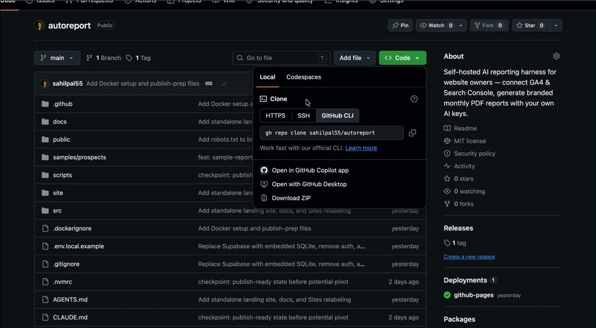

Each reporting cycle can become another isolated snapshot instead of part of a continuous story.
AutoReport · Independent product
Reports that remember what happened last month.
AutoReport turns recurring reporting into a private, user-owned AI workflow. Your data, history, and model access stay under your control.
The public story moves from the privacy-first promise to a concrete monthly report.
Act one · The tension
Recurring reports often start from zero.
Dashboards show the present. A useful report also needs memory: what changed, what looks unusual, what was recommended, and whether the last recommendation worked.
Hosted AI tools can require sensitive exports, external accounts, and model access outside the user's environment.
Charts still leave the user to connect changes, anomalies, and next actions manually.
Without history, last month's advice is rarely checked against what actually happened.
Act two · The product decision
Make the workflow useful without taking ownership away.
Privacy is part of the product model
AutoReport was designed around user-controlled model access and local storage, not a hosted account system.
The interface needed to explain that difference plainly, then move attention back to the reporting job rather than turning privacy into technical theater.
Local-first by default
The database travels with the app. No managed cloud account is required.
Your model, your key
Users can supply OpenAI or Anthropic access, or keep inference local with compatible local tools.
History is working data
Past reports provide the baseline for trends, anomalies, and follow-through.
Inside the product, reporting history and model configuration stay in the user's own workspace.
Chapter one · The workflow
From raw data to a report with memory.
Start with the reporting source
Keep the reporting workflow inside the user's own instance.
Read against history
Use prior periods as context instead of treating every run as new.
Surface change and anomalies
Turn patterns into a narrative a person can review.
Revisit recommendations
Check previous advice against what happened next.
Chapter two · Product principles
Private by default. Honest by design.
Model access stays controlled by the person running the app.
Reports build on history, flag change, and revisit recommendations.
No cloud signup or managed user system is required.
The project can be inspected, adapted, and kept by its users.

The open repository makes the ownership model tangible: clone it, inspect it, and run it on your own terms.
Act four · The result
A reporting product whose architecture supports its promise.
The app, history, and model configuration remain under the user's control.
Recurring reports can compare periods and revisit earlier recommendations.
The live project documents the local-first model and links to its source.
What I would improve next
The next case-study revision should add validated usage feedback, screenshots of the complete report-generation flow, and evidence from repeated real reporting cycles.
Those additions will deepen the story without changing the page structure.